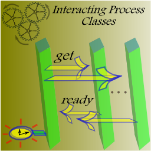

Projects on Software Functionality Validation
(offered by Abhik Roychoudhury)
1. Testing and Debugging of Evolving Programs (Current)
[Description]
Programmers do not write programs entirely from scratch. Rather, over time, a program gradually evolves with more features possibly being added. In industrial software development projects, this complexity (of software evolution) is explicitly managed via checking in of program versions. Validation of such evolving programs (say, to address possible bugs introduced via program changes) remains a huge problem in terms of program development. We take a fresh look at the problem of testing and debugging of evolving programs. Among the problems we study lies the issue of regression debugging - why a functionality that worked before does not work when a program moves from one version to another. We also study the issue of test-suite augmentation where we find out what tests need to be added to a program's test-suite as it moves from one version to another. Last but not the least, we apply our testing and debugging methods for analysis of embedded software w.r.t. its golden implementation (the non-embedded software equivalent).
[PhD Student]
Qi Dawei (since 2009), Marcel Bohme (since 2011).
[Sample Publications]
Software Change Contracts ( PDF )
Dawei Qi, Jooyong Yi, Abhik Roychoudhury
New Ideas and Emerging Results (NIER) Track,
ACM SIGSOFT Symposium on Foundations of Software Engineering (FSE) 2012.
Modeling Software Execution Environment ( PDF )
Dawei Qi, William Sumner, Feng Qin, Mai Zheng, Xiangyu Zhang, Abhik Roychoudhury
19th IEEE Working Conference on Reverse Engineering (WCRE), 2012.
Path Exploration based on
Symbolic Output (
PDF )
Dawei Qi, Hoang D.T. Nguyen,
Abhik Roychoudhury
Joint meeting of ESEC and ACM SIGSOFT Symposium on the Foundations of Software
Engineering (FSE), ESEC-FSE 2011.
Locating Failure Inducing
Environment Changes (
PDF )
Dawei Qi, Cristal Ngo, Tao Sun,
Abhik Roychoudhury
10th ACM SIGPLAN-SIGSOFT Workshop on Program Analysis for Software Tools and
Engineering (PASTE) 2011.
Test Generation to Expose Changes in Evolving Programs ( pdf )
Dawei Qi, Abhik Roychoudhury, Zhenkai Liang
25nd IEEE/ACM International Conference on Automated Software Engineering (ASE) 2010.
Golden Implementation Driven Software Debugging ( pdf )
Ansuman Banerjee, Abhik Roychoudhury, Johannes A. Harlie, Zhenkai Liang
International Symposium on Foundations of Software Engineering (FSE) 2010.
DARWIN: An Approach for Debugging Evolving Programs (pdf)
[ACM SIGSOFT Distinguished Paper Award]
Dawei Qi, Abhik
Roychoudhury, Zhenkai Liang,
Kapil Vaswani
Joint meeting of ESEC and ACM SIGSOFT Symposium on the Foundations of Software
Engineering (FSE), ESEC-FSE 2009.
Automated Path Generation for Software Fault
Localization (
pdf )
Tao Wang and Abhik Roychoudhury (Short Paper)
ACM/IEEE Intl. Conf. on Automated Software Engineering (ASE) 2005.
Accurately Choosing Execution Runs for Software Fault Localization (
pdf )
Liang Guo, Abhik Roychoudhury and Tao Wang
Compiler Construction (CC) 2006, LNCS 3923, Springer Verlag.
2. Dynamic Slicing Infrastructure for Program Debugging (Completed)
[Description]
Software fault localization involves locating the exact cause of error for a "failing" execution run – a run which exhibits an unexpected behavior. We have proposed several methods for identifying the cause of error, which are based on execution tracing and analysis. Dynamic slicing finds out statements in the buggy program which affected the unexpected behavior during the failing execution run, via dynamic control or data dependencies. It is performed on an execution trace to detect dynamic control and data dependencies. In practice, execution traces maybe be too huge to fit into the memory. We have proposed a method which can collect, store, and analyze (for slicing) an execution trace all in compressed form. Experiments on real-life benchmark suites show that our method is efficient in both time and space. The JSlice tool developed as part of this project is currently being used in over 150 organizations spread over 30 countries for teaching, development and research.
[Project Webpage]
[PhD Student]
Wang Tao (graduated)
[Sample Publications]
Dynamic Slicing on Java Bytecode Traces (
Tech Report with all Proofs,
Paper )
Tao Wang and Abhik Roychoudhury
ACM Transactions on Programming Languages and Systems (TOPLAS), Volume 30(2),
March 2008.
Hierarchical Dynamic Slicing (
pdf )
Tao Wang and Abhik Roychoudhury
ACM International Symposium on Software Testing and Analysis (ISSTA) 2007.
Using Compressed Bytecode Traces for Slicing
Java Programs, (
pdf )
Tao Wang and Abhik Roychoudhury
ACM/IEEE International Conference on Software Engineering (ICSE) 2004.
3. Understanding Interactions in Distributed / Concurrent Programming (Completed)
[Description]

State of the art
Various distributed reactive systems consisting of classes of interacting processes naturally arise in various application domains such as telecommunications, automotive and avionics. For instance, a telecommunication network consisting of many phones, an air-traffic controller sending latest weather information to several weather-aware processes etc. The requirements documents of such systems typically specify possible inter-process interaction scenarios among various process classes, and abstract away from the local computations within various classes. Further, actual number of processes of various types (e.g. number of phones in a telecommunication network) is either not known, or not fixed at the time of laying out the initial requirements. The current UML-based behavioral modeling notations (e.g. State-machines, Sequence diagrams etc.) are not adequate for requirements modeling and validation of such systems, since they assume a fixed number of objects (or processes) in the system.
Accomplishments
We have developed two executable Message Sequence Chart (MSC) based notations for requirements modeling and validation of distributed systems consisting of classes of interacting processes. The first notation of Interacting Process Classes (IPC) models the behavior of each class in the system using a Labeled Transition System (LTS), while using the notion of transactions (described using MSCs) to capture short interaction snippets in which objects from various classes participate during execution. The second notation of Symbolic Message Sequence Charts (SMSCs) is a light-weight extension of the MSC notation. While, in the case of MSCs, a lifeline can represent only a concrete object, SMSCs introduce the concept of a symbolic lifeline; instead of representing a single object, a symbolic lifeline in a SMSC represents a collection of objects from a class.
[PhD Student]
Ankit Goel (graduated)
[Sample Publication]
Interacting Process Classes (
pdf )
Ankit Goel, Abhik Roychoudhury, and P.S. Thiagarajan
ACM Transactions on Software Engineering and Methodology (TOSEM), 18(4), 2009.
Initial version appeared in Intl. Conf. on Software Engineering (ICSE) 2006.
Symbolic Message Sequence Charts (
pdf )
Abhik Roychoudhury, Ankit Goel and Bikram Sengupta
15th ACM SIGSOFT Symposium on the Foundations of Software Engineering (FSE)
2007.
Journal Version to appear in ACM Transactions of Software Engineering and Methodology (TOSEM).
Footprinter: Roundtrip Engineering via Scenario and State based Models ( pdf )
Ankit Goel, Bikram Sengupta and Abhik Roychoudhury,
ACM International Conference on Software Engineering (ICSE) 2009, [Short paper].
4. Memory Model aware Software Validation (Completed)
[Description]
In this work, we develop a memory-model sensitive reachability analyzer for the programming languages C#, Java. The architecture of our tool has similarities with the Java Path Finder model checker for Java programs, that is, our checker can verify a C# program at the level of bytecodes. The checker proceeds by representing and managing states at the level of C#'s stack-based virtual machine. However, unlike the JPF (or existing model checkers), our reachability analyzer takes the .NET memory model into account. In other words, it allows the re-orderings permitted by .NET memory model to explore additional reachable states in a program. This results in truly platform-independent verification.
[PhD Student]
None.
[Sample Publication]
Memory Model Sensitive Bytecode Verification (
pdf )
Thuan Quang Huynh and Abhik Roychoudhury
Formal Methods in System Design, 31(3), December 2007. Initial Version appeared in Intl. Symp. on Formal Methods (FM) 2006.
Java Memory Model aware Software Validation
(
pdf,
Associated TechReport )
Arnab De, Abhik Roychoudhury and Deepak D'Souza
Program Analysis for Software Tools and Engineering (PASTE) 2008.
Formal Reasoning about Hardware and Software
Memory Models, (ps)
Abhik Roychoudhury
Intl. Conf. on Formal Engineering Methods (ICFEM) 2002, Springer Verlag, LNCS
2495, pages 423-434.
Specifying Multithreaded Java Semantics for
Program Verification, (ps,
pdf)
Abhik Roychoudhury and Tulika Mitra
ACM/IEEE International Conference on Software Engineering (ICSE) 2002, pages
489-499.